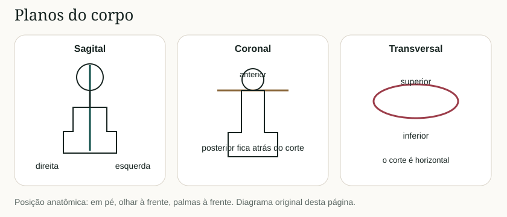
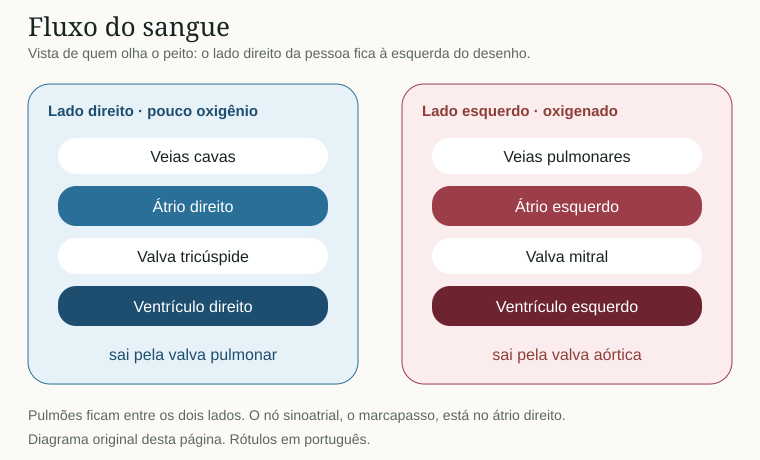
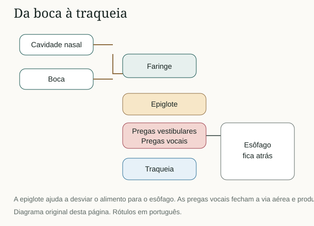
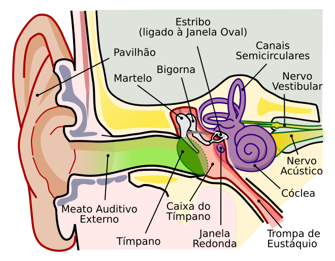
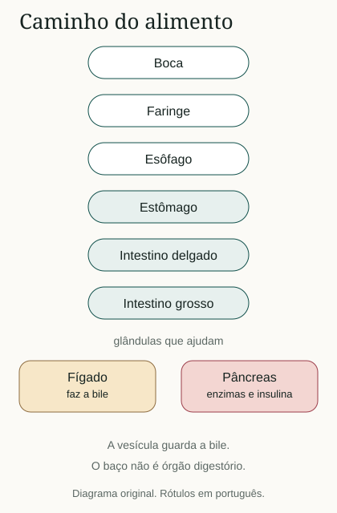
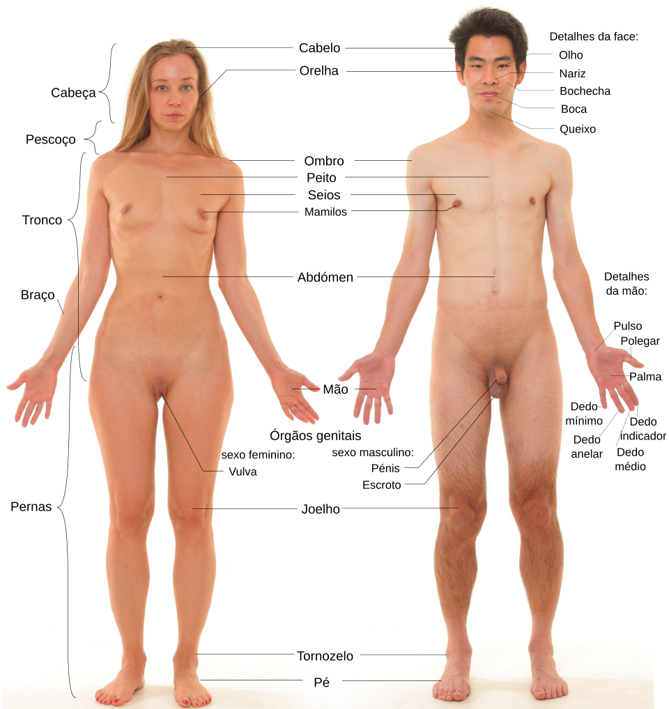

Novo tema · revisão livre
Tudo o que se estuda em medicina.
Do primeiro período à residência. Anatomia em 3D, o curso inteiro, casos do internato, escalas da prática, fonoaudiologia, simulados e as provas nacionais. Cada número entre colchetes abre a fonte original: DCN, Inep, CFM, Ministério da Saúde, JAMA, Thorax.
Isto é material de estudo, não consulta, diagnóstico ou conduta. Não substitui graduação, preceptor, diretriz ou exame. Rouquidão, falta de ar, dor no peito, engasgo frequente ou perda súbita de fala pedem avaliação profissional. Em emergência, SAMU 192.
Mapa vivo
Toque o corpo
Cada região abre o que vale estudar ali: coração, laringe, nervos, ossos.
Ver o mapa escritoPor onde começar
Sete portas. Cada uma leva ao pedaço certo da página. Não precisa ler de cima a baixo.
Meu período
Do 1º ao 12º: o que costuma vir em cada fase e o que treinar aqui.
Revisar o corpo
Fichas dos sistemas e o atlas 3D com 513 estruturas reais.
Estudar por área
Internato, especialidades e ciclo básico: pule direto para o seu rodízio.
Casos e escalas
Doze casos passo a passo, Glasgow, Apgar, qSOFA, CURB-65, IMC e valor preditivo.
Quero treinar
Simulados e cartões. Erre primeiro, leia a explicação depois.
Fonoaudiologia
Audição, linguagem, voz, motricidade, disfagia e fluência.
Provas e residência
Enamed, Revalida, Enare e as 55 especialidades oficiais.
Em que período você está?
Escolha o seu ano. O quadro mostra o que costuma ser estudado nessa fase, o que treinar nesta página e o marco oficial que vem pela frente. A ordem das disciplinas muda de faculdade para faculdade: quem manda é o projeto pedagógico do seu curso.
Regra nacional: o curso é presencial e tem no mínimo 7.200 horas. A DCN de 2025 dá até quatro anos para ser implantada por inteiro, então turmas mais antigas podem seguir o desenho de 2014 [R].
Estude pela área em que você está
Qualquer período, qualquer especialidade. Cada cartão leva ao pedaço desta página que conversa com aquele rodízio: ficha, 3D, caso, escala ou livro aberto. A ordem abaixo segue o internato da DCN e, depois, as especialidades e o ciclo básico [R].
Internato e as sete áreas do Enamed
Internato · Enamed
Clínica médica
Dor no peito, sepse, pneumonia, HAS e as escalas.
Internato · Enamed
Cirurgia
Abdome agudo, apendicite e o 3D do intestino.
Internato · Enamed
Ginecologia e obstetrícia
Pré-eclâmpsia, Apgar e o manual de alto risco.
Internato · Enamed
Pediatria
Primeiro minuto, Apgar, orelhinha e corpo estranho.
Internato · Enamed
Medicina de família
HAS na APS, CURB-65 no posto e o PCDT.
Internato · Enamed
Saúde mental
Risco de suicídio, escuta e a linha de cuidado.
Internato · Enamed
Saúde coletiva
SUS, testes diagnósticos, valor preditivo e UNA-SUS.
Internato · DCN
Urgência e emergência
30% do internato, junto com MFC. Sepse, AVC, trauma.
Especialidades e o corpo
1º e 2º anos
Anatomia 3D
12 órgãos reais, 513 estruturas tocáveis.
Clínica
Cardiologia
Circuito, valvas, ECG de 10 minutos e o papilar.
Clínica
Pneumologia
Segmentos, CURB-65 e o brônquio direito.
Clínica
Neurologia
Broca, Glasgow, medula e o cérebro de 283 regiões.
Clínica
Otorrino e fono
Orelha, laringe, Weber, Rinne e disfagia.
Clínica
Oftalmologia
O olho em 3D: córnea, cristalino e retina.
Clínica
Gastroenterologia
Couinaud, bile e o modelo do fígado.
Clínica
Nefrologia
Néfron, rim em 3D e a ficha do sistema urinário.
Clínica
Endocrinologia
Insulina, ilhotas e o pâncreas em 3D.
Clínica
Ortopedia
Joelho em 3D e a linguagem da fratura.
Clínica
Dermatologia
Mácula, pápula, vesícula: descreva antes de nomear.
Interprofissional
Fonoaudiologia
Audição, linguagem, voz, motricidade e disfagia.
Atlas 3D
Doze órgãos reconstruídos de corpos reais, com 513 estruturas que você pode tocar. Coração, pulmões com laringe, rim, fígado com os segmentos de Couinaud, olho, joelho e os outros vêm do Visible Human, da Biblioteca Nacional de Medicina dos Estados Unidos. O cérebro, com 283 regiões, vem do atlas do Allen Institute, ajustado a esse mesmo corpo.
- Escolha o órgão. Arraste para girar. Use a roda do mouse ou dois dedos para chegar perto.
- Toque uma parte. Aparecem o nome, o grupo e o que costuma cair em prova.
- Veja por dentro e treine. O raio-x tira as camadas de fora, isolar separa uma peça, e o Me teste pede que você ache cada estrutura.
O primeiro órgão carrega quando esta parte aparece na tela.
Coração
Quatro câmaras, quatro valvas
Gire o modelo e procure o ápice.
Olhar de Direita e esquerda são do paciente, como em todo atlas.
Nenhuma estrutura escolhida
Toque o modelo
Clique numa parte do órgão ou escolha na lista abaixo.
Estruturas deste modelo
Modelos da HuBMAP CCF 3D Reference Library, licença CC BY 4.0, feitos a partir do Visible Human Project (National Library of Medicine) e, no cérebro, do atlas do Allen Institute for Brain Science. Biblioteca de referência [R]. Alterações feitas nesta página: cores para separar as estruturas, nomes e explicações em português e malha simplificada para carregar mais rápido. As cores não são as do tecido vivo. Os músculos-chave da medula seguem a ficha ISNCSCI de 2026 [R], e o fim da medula perto de L1–L2 segue o StatPearls [R].
Como estudar, com evidência
Ler uma vez não gruda. As revisões de psicologia cognitiva concordam em dois pontos: testar a memória e espaçar a revisão rendem mais do que reler e grifar [R]. A página foi montada em cima disso: simulados, cartões, casos e o quiz do 3D.
Teste antes de reler
Feche a ficha e escreva os doze nervos cranianos. Quem se testou lembrou mais uma semana depois do que quem releu [R]. Em residentes de pediatria e emergência, provas repetidas ganharam do estudo repetido seis meses depois [R].
Espace a revisão
Volte amanhã, em três dias e na semana seguinte. Uma síntese de 317 experimentos mostrou que espaçar rende mais do que concentrar [R]. O Anki faz a agenda de graça.
Misture os temas
Estudantes que treinaram ECG com diagnósticos misturados acertaram 46% dos traçados novos. Quem treinou em blocos de um tipo só, 30% [R]. O simulado misto e os cartões fazem esse sorteio.
Explique para você
Estudantes do 3º ano que explicaram o próprio raciocínio em casos clínicos diagnosticaram melhor uma semana depois, nos temas menos familiares [R]. Nos casos desta página, responda em voz alta antes de abrir.
Desenhe e localize
Um coração com quatro câmaras, setas e o nome das valvas obriga a lembrar. Depois confira no 3D: gire, isole a estrutura e faça o quiz de localização.
O que rende pouco
Grifar, reler e resumir ficaram entre as técnicas de baixa utilidade na mesma revisão [R]. Não fazem mal, mas não substituem o teste.
Mapa do que estudar
A graduação da saúde gira em torno dos sistemas. A fonoaudiologia mora sobretudo na cabeça, no pescoço, na audição, na linguagem e na deglutição, mas precisa do corpo inteiro para fazer sentido.
Base
Linguagem do corpo
Posição anatômica, planos, eixos e cavidades.
AnatomiaEsqueleto
Axial, apendicular, coluna e os ossos que caem em prova.
AnatomiaMúsculos
Tipos de tecido muscular, diafragma e mastigação.
FisiologiaCoração e sangue
Quatro câmaras, valvas, marcapasso e o que artéria realmente significa.
FisiologiaRespiração e laringe
Vias aéreas, alvéolos, pregas vocais e nervos da voz.
SentidosOrelha
Ouvido externo, médio e interno, tuba auditiva e diapasão.
NeuroSistema nervoso
Meninges, doze pares cranianos e o modelo clássico das afasias.
VíscerasDigestão, rins e hormônios
Bile, néfron, insulina e o que não confundir entre os órgãos.
FonoaudiologiaComunicação e deglutição
Audiologia, linguagem, voz, motricidade, disfagia e fluência.
Atlas para olhar devagar
As primeiras pranchas estão em português. As seguintes vêm de atlas clássicos, às vezes com rótulo em inglês: a legenda traduz o que importa. Clique para ampliar.

Planos, em português

Coração, em português

Laringe, em português

Orelha, em português


Digestão, em português

Superfície do corpo, em português


Crânio de perfil


Fluxo no coração


Coração aberto


Vias aéreas


Lobos do cérebro


Medula e meninges


Cartilagens da laringe


Interior da laringe


Orelha


Rins


Esqueleto inteiro
O curso inteiro
Abra só a disciplina que você vai estudar hoje. Cada bloco diz o que a matéria é, o que gravar primeiro e onde ler de graça.
Ciclo básico
Biologia celular
abrir
A célula é a unidade da vida. O núcleo guarda o DNA. Os ribossomos leem o RNA e montam proteínas. A mitocôndria produz a maior parte do ATP. A membrana decide o que entra e o que sai. Lisossomos digerem. O complexo de Golgi empacota e endereça.
- Mitose gera duas células iguais. Meiose gera gametas, com metade dos cromossomos.
- Transcrição é DNA para RNA, no núcleo. Tradução é RNA para proteína, no ribossomo.
- Leia o começo de Biology 2e, da OpenStax.
Bioquímica
abrir
Bioquímica explica a vida em moléculas. Carboidrato é energia rápida. Lipídio guarda energia e forma membrana. Proteína faz o trabalho: enzima, transporte, defesa, estrutura. Ácido nucleico guarda informação. A água e o pH sustentam tudo isso.
- ATP é a moeda de energia. Glicólise, ciclo de Krebs e cadeia respiratória são o caminho clássico da glicose até o ATP.
- Enzima acelera reação e é específica. pH e temperatura fora da faixa a desligam.
- O sangue arterial fica em torno de 7,35 a 7,45. Abaixo disso é acidose. Acima, alcalose.
Histologia
abrir
Quatro tecidos básicos: epitelial, conjuntivo, muscular e nervoso. O epitélio reveste e secreta. O conjuntivo une, sustenta e inclui sangue, osso, cartilagem e gordura. O muscular contrai. O nervoso conduz sinal.
- Epitélio não tem vaso próprio. Come pela membrana basal.
- No microscópio, primeiro diga o tecido. Depois a camada. Depois a célula.
- Treine com lâminas reais: a Michigan Histology tem centenas de lâminas virtuais e um manual gratuito. O LibreTexts Medicine tem o texto.
Embriologia
abrir
Da fecundação ao corpo. O zigoto vira mórula, blastocisto e então três folhetos. Ectoderma faz pele e sistema nervoso. Mesoderma faz músculo, osso, coração, rins e sangue. Endoderma faz o revestimento do tubo digestório e do respiratório.
- A notocorda induz o tubo neural. Falha nesse fechamento está na base dos defeitos do tubo neural.
- A placenta troca gás, nutriente e dejeto. Não é um pulmão, mas faz o papel de troca para o feto.
- Grave os três folhetos antes de qualquer malformação.
Imunologia
abrir
A imunidade inata responde na hora: pele, mucosa, fagócito, complemento e inflamação. A adaptativa aprende: linfócito B faz anticorpo, linfócito T coordena ou mata célula infectada. Vacina é imunização ativa. Soro pronto é imunização passiva.
- Os quatro sinais clássicos da inflamação: calor, rubor, tumor e dor. A perda da função entrou depois.
- Anticorpo marca. Célula executa. Não troque os dois.
- Alergia, autoimunidade e imunodeficiência são três perguntas diferentes.
Microbiologia
abrir
Bactéria é célula sem núcleo organizado. Vírus não é célula: precisa de outra célula para se copiar. Fungo tem núcleo e parede de quitina. Protozoário é eucarioto unicelular. O antibiótico age em bactéria. Não trata vírus.
- Gram-positiva tem parede grossa de peptideoglicano e fica roxa. Gram-negativa tem membrana externa e fica rosa.
- Esterilização mata tudo, inclusive esporo. Desinfecção reduz micróbio em superfície. Antissepsia faz isso em tecido vivo.
- O livro gratuito é o OpenStax Microbiology.
Parasitologia
abrir
No Brasil, parasito não é detalhe. Protozoários como o da malária, da doença de Chagas e da leishmaniose, e helmintos como áscaris, ancilóstomo e esquistossomo, ainda organizam prova e posto de saúde. O ciclo tem hospedeiro e, muitas vezes, um vetor.
- Grave o vetor antes do nome do parasito: barbeiro, flebótomo, mosquito, caramujo.
- Separe o que entra pela boca, o que entra pela pele e o que o inseto inocula.
- A biblioteca do Ministério da Saúde tem guias abertos dessas doenças.
Patologia geral
abrir
Patologia estuda a lesão. A célula pode se adaptar: hipertrofia, hiperplasia, atrofia e metaplasia. Se a agressão passa do limite, há lesão reversível ou morte: necrose e apoptose. Inflamação é a resposta. Reparo pode ser regeneração ou cicatriz. Neoplasia é crescimento novo, benigno ou maligno.
- Benigno fica local e costuma ser bem delimitado. Maligno invade e pode metastatizar.
- Carcinoma vem de epitélio. Sarcoma vem de mesênquima. São pontos de partida, não o nome da pessoa.
- Toda ficha clínica desta página fica mais fácil depois desta linguagem.
Farmacologia
abrir
Farmacologia estuda o que o fármaco faz no corpo e o que o corpo faz com o fármaco. Agonista liga e ativa o receptor. Antagonista liga e impede. Absorção, distribuição, metabolismo e excreção formam a farmacocinética. O efeito é a farmacodinâmica.
- Via oral passa pelo fígado antes de chegar ao corpo inteiro. Isso é o primeiro passo hepático.
- Meia-vida é o tempo para a quantidade cair pela metade. Não é o tempo do efeito, embora os dois conversem.
- Não decore dose daqui. Dose muda com idade, rim, fígado e diretriz. Use o Manual MSD para o mecanismo.
Genética médica
abrir
O humano tem 46 cromossomos, 23 pares. Gene é um trecho de DNA com instrução. Alelo é uma versão desse gene. Dominante aparece com uma cópia. Recessivo pede as duas, no modelo clássico. Cromossomo a mais ou a menos é aneuploidia. Mutação pode ser herdada ou nova.
- Monte um heredograma antes de chutar o padrão.
- Mitocondrial vem da mãe. Ligado ao X tem regra própria para homem e mulher.
- Aconselhamento genético explica risco. Não é uma ordem de ter ou não ter filho.
Ciclo clínico e saúde
Semiologia
abrir
Semiologia é a arte de colher a história e examinar. A anamnese vem antes do estetoscópio: queixa, tempo, o que piora, o que alivia, antecedentes e o que a pessoa acha que está acontecendo. O exame clássico segue inspeção, palpação, percussão e ausculta.
- Sinal é o que você observa. Sintoma é o que a pessoa relata.
- Uma hipótese nasce da história. O exame testa a hipótese. O exame complementar confirma ou derruba.
- Não colete dado que você não sabe interpretar. Aprenda o gesto junto com o sentido.
Clínica médica
abrir
Clínica médica junta os sistemas no adulto. O estudo útil não é uma lista de doenças. É um jeito de pensar: o que é comum, o que é grave, o que não pode esperar. Dor torácica, falta de ar, febre e alteração da consciência abrem mais portas do que qualquer nome raro.
- Para cada queixa, escreva três causas frequentes e uma que mata se passar batido.
- Separe síndrome de doença. Insuficiência cardíaca é síndrome. A causa pode ser várias.
- O MSD profissional, em português, é a referência gratuita para cruzar com a ficha.
Pediatria
abrir
A criança não é um adulto pequeno. Dose, água do corpo, via aérea e o que é normal mudam com a idade. Crescimento, desenvolvimento, aleitamento, vacina e a triagem do recém-nascido organizam o começo. Febre no lactente pequeno não se trata como febre de escolar.
- Marcos de linguagem e motor são faixas, não um cronômetro. Fugir da média é motivo de olhar com atenção, não de rótulo imediato.
- O teste da orelhinha, o coraçãozinho, o pezinho e o olhinho são triagens. Falha pede confirmação.
- Calendário de vacina muda. Confira a versão atual do Ministério da Saúde.
Ginecologia e obstetrícia
abrir
Ginecologia estuda o ciclo menstrual, o colo, o útero, os ovários, a mama e a saúde sexual. Obstetrícia acompanha a gestação, o parto e o puerpério. Pré-natal existe para achar cedo o que dá para cuidar: pressão, anemia, infecção, crescimento do feto e o risco de parto prematuro.
- Data da última menstruação ainda abre a conta da idade gestacional, corrigida pelo ultrassom quando preciso.
- Sangramento na gestação e pressão alta com sintomas não são assunto de espera.
- Ciclo menstrual: o eixo hipotálamo, hipófise e ovário comanda. Estrogênio e progesterona são os dois nomes de abertura.
Cirurgia
abrir
Cirurgia é indicação, preparo, técnica e o que acontece depois. Antes de qualquer nome de operação, estude assepsia, antissepsia, a cicatrização e o porquê de operar ou não operar. Abdome agudo é um clássico: dor, defesa, parada de gases e o tempo importam.
- Ferida limpa, limpa-contaminada, contaminada e suja mudam o risco de infecção.
- Jejum, alergia, coagulação e a via aérea são pergunta de pré-operatório, não detalhe.
- Anatomia aqui deixa de ser nome e vira caminho: o que você pode lesar ao lado.
Ortopedia
abrir
Osso, articulação, músculo e nervo periférico no trauma e na doença. Fratura se descreve pelo osso, pelo traço, se está exposta e se desviou. Luxação é perda do contato articular. Entorse é lesão de ligamento com a articulação no lugar.
- Antes do osso, olhe pulso, cor, movimento e sensibilidade distais.
- Exposta é urgência de infecção, não só de raio-x.
- Volte à ficha de esqueleto antes de decorar classificação.
Dermatologia
abrir
A pele se descreve antes de se nomear. Mácula é plana. Pápula é elevada e pequena. Vesícula tem líquido claro. Pústula tem pus. Nódulo é mais fundo. Úlcera perde pele. A distribuição, a cor e o tempo contam tanto quanto o nome.
- Descreva a lesão como quem não vai ver a foto.
- Coceira, dor e febre mudam a lista de causas.
- A histologia da pele, epiderme e derme, segura essa linguagem.
Oftalmologia
abrir
O olho recebe a luz na córnea, ajusta na pupila, foca no cristalino e forma a imagem na retina. O nervo óptico leva ao cérebro. Vermelhidão, dor e queda súbita da visão não são a mesma consulta. Glaucoma, catarata e retinopatia são três mecanismos diferentes.
- Córnea, humor aquoso, cristalino, vítreo, retina. Nessa ordem a luz viaja.
- O II par é visão. O III, o IV e o VI movem o olho. O facial fecha a pálpebra.
Otorrinolaringologia
abrir
Nariz, orelha, faringe e laringe. É a ponte direta com a fonoaudiologia: otite, adenoide, desvio de septo, rouquidão e a tuba auditiva. A fono cuida da função. A otorrino cuida da estrutura e de boa parte da doença.
- Respiração oral pede os dois olhares.
- Rouquidão que não melhora em 4 semanas pede exame da laringe. Com sinal de alarme, como fumo, dor, dificuldade de engolir ou cirurgia recente no pescoço, antes disso [R].
- Use a ficha da orelha e a da laringe como base, não como atalho para pular o exame.
Neurologia
abrir
Neurologia localiza a lesão e depois pergunta a causa. Cérebro, tronco, medula, raiz, plexo, nervo, junção e músculo dão quadros diferentes. Deficit súbito de fala, força ou visão é tempo de emergência, não de revisão calma. Convulsão, cefaleia em trovoada e rigidez de nuca com febre também.
- Primeiro o lugar. Depois a causa: vascular, inflamatória, infecciosa, traumática, metabólica, neoplásica.
- Afasia é linguagem. Disartria é motor da fala. As duas podem aparecer juntas e ainda assim não são a mesma coisa.
- A ficha dos doze nervos cranianos é pré-requisito.
Psiquiatria
abrir
Psiquiatria estuda sofrimento mental com história, exame do estado mental e contexto. Humor, pensamento, percepção, sono, apetite e função contam. Tristeza não é diagnóstico de depressão. Ouvir voz não fecha, sozinho, um nome. Risco de suicídio se pergunta com clareza, não se evita.
- Separe doença, reação a uma perda e efeito de substância ou de outra doença do corpo.
- O exame psíquico descreve. Não julga o caráter.
- Em crise aguda, a prioridade é segurança, não o nome fino do quadro.
Infectologia
abrir
Infectologia cruza o micróbio, a porta de entrada e a defesa da pessoa. Febre é um sinal, não uma doença. Síndrome gripal, diarreia, infecção urinária, pneumonia e meningite pedem raciocínios diferentes. Antibiótico cedo demais, ou no vírus, seleciona resistência e não cura.
- Pergunte: onde entrou, que órgão sofre, a pessoa é imunocomprometida?
- Notificação de doença de vigilância é parte do estudo no Brasil, não burocracia à toa.
Imagem
abrir
Radiografia, ultrassom, tomografia e ressonância mostram anatomia de outro jeito. Antes de achar a doença, reconheça o normal. No tórax, trace traqueia, mediastino, diafragma e os campos pulmonares. No abdome, saiba o que é osso, gás e partes moles. A Radiopaedia é o atlas gratuito desse olhar.
Saúde coletiva
abrir
Saúde coletiva olha a população, não só a consulta. O SUS se apoia em universalidade, integralidade e equidade. Atenção primária ordena o cuidado. Vigilância acompanha o que adoece a cidade. Epidemiologia mede.
- Incidência é caso novo num tempo. Prevalência é quem tem a condição agora.
- Sensibilidade é a proporção de doentes que o teste acusa. Especificidade é a proporção de sadios que ele dá como negativos. Mudar o ponto de corte costuma ganhar uma e perder a outra.
- Valor preditivo depende da prevalência. O mesmo teste erra mais positivos numa população em que a doença é rara.
- Estude pelos cursos da UNA-SUS e pelo portal da atenção primária.
Ética e bioética
abrir
Quatro princípios organizam a revisão: autonomia, beneficência, não maleficência e justiça. Autonomia pede informação que a pessoa entenda, não um papel assinado no escuro. Sigilo tem limite quando há risco concreto a terceiro ou dever legal. Pesquisa com gente pede consentimento e um comitê.
- Capacidade de decidir pode faltar de modo transitório. Isso não apaga a pessoa.
- O que é legal e o que é ético conversam e às vezes não coincidem. Saiba os dois.
Urgência, no nível do estudo
abrir
O primeiro aprendizado de urgência é reconhecer e pedir ajuda. Dor no peito, falta de ar grave, convulsão, sangramento que não para, rebaixamento da consciência e deficit neurológico súbito são motivos de SAMU 192, não de terminar a ficha. Suporte básico de vida se aprende em curso prático, com manequim e instrutor. O AVASUS tem módulo aberto sobre o tema.
Internato, o que a DCN pede
Como o internato está desenhado
abrir
Estágio curricular obrigatório em serviço, com supervisão docente. Pela DCN de 2025, dura no mínimo dois anos e soma pelo menos 35% da carga horária do curso. Plantões de até 12 horas, sem passar de 40 horas na semana [R].
- Pelo menos 30% do internato em medicina de família e em urgência e emergência do SUS, com distribuição proporcional entre as duas.
- Os outros 70% em clínica médica, cirurgia, ginecologia e obstetrícia, pediatria e saúde mental, com saúde coletiva, medicina intensiva e traumato-ortopedia atravessando os rodízios.
- Antes de começar, a DCN pede ao menos uma avaliação somativa abrangente, para ver se há competência mínima para o serviço.
Medicina de família e comunidade
abrir
A atenção primária coordena o cuidado e ordena a rede. O estudo útil aqui é o da pessoa ao longo do tempo: hipertensão, diabetes, saúde da criança, pré-natal de risco habitual, saúde mental comum e o que dá para resolver no território antes de encaminhar.
- Hipertensão no adulto: PA de consultório ≥ 140/90 mmHg, confirmada em outra ocasião, salvo crise ou lesão de órgão-alvo [R].
- Uma medida isolada não fecha diagnóstico. Hipertensão do avental branco e hipertensão mascarada existem.
- O PCDT de hipertensão e os cadernos da APS são o texto de trabalho no SUS, não o resumo desta ficha.
Sepse, a definição de estudo
abrir
Sepse é disfunção orgânica ameaçadora da vida causada por resposta desregulada à infecção. Operacionalmente, isso é um aumento de 2 pontos ou mais no SOFA [R]. Choque séptico junta vasopressor para manter PAM ≥ 65 mmHg e lactato > 2 mmol/L, sem hipovolemia.
- qSOFA não diagnostica sepse. É um aviso à beira do leito, fora da UTI: FR ≥ 22, alteração mental, PA sistólica ≤ 100. Dois ou três pontos pedem olhar de perto.
- Na suspeita, a Surviving Sepsis pede lactato, culturas antes do antibiótico se isso não atrasar, e antibiótico imediato no choque, dentro da primeira hora [R].
- SIRS não some da conversa, mas não define mais sepse.
Pneumonia adquirida na comunidade
abrir
Tosse, febre e condensação. O CURB-65 ajuda a pensar o local de tratamento: confusão, ureia alta, FR > 30, pressão baixa e idade ≥ 65. Zero ou um ponto, ambulatorial entra na conversa. Três ou mais, hospital [R] [R].
- A conta não dispensa oxigenação, comorbidade, ingestão oral e o contexto social.
- Sem ureia no posto, use CRB-65.
- No 3D, ache o lobo e o segmento que a radiografia aponta.
Síndromes hipertensivas na gestação
abrir
Depois da 20ª semana, PA ≥ 140/90 em quem era normotensa. Se vier com proteinúria significativa, é pré-eclâmpsia. Sem proteinúria, ainda é pré-eclâmpsia se houver disfunção de órgão-alvo ou sofrimento placentário [R].
- Proteinúria significativa: ≥ 300 mg/24 h, ou relação proteína/creatinina ≥ 0,3, ou pelo menos uma cruz na fita.
- Cefaleia occipital, escotomas, epigastralgia e PA ≥ 160/110 são urgência obstétrica, não espera de ambulatório.
- Eclâmpsia é convulsão no espectro da pré-eclâmpsia. O sulfato de magnésio entra como profilaxia no protocolo, não como detalhe desta ficha.
Abdome agudo e apendicite
abrir
Dor que muda de lugar, ânimo que cai, febre que sobe. Na apendicite clássica a dor começa periumbilical, visceral, e depois finca no ponto de McBurney, parietal. Defesa e descompressão dolorosa sugerem peritônio irritado.
- McBurney fica a cerca de um terço da distância da espinha ilíaca ântero-superior direita até o umbigo.
- Rovsing, psoas e obturador são sinais, não prova. Apendicite atípica existe, sobretudo em criança, gestante e idoso.
- Abra o intestino no 3D para ver o território, não para operar.
Risco de suicídio, no nível do estudo
abrir
Perguntar não aumenta o risco. O Ministério da Saúde pede que o tema seja investigado em toda consulta de depressão, com escuta, sem julgamento [R]. Crise aguda é segurança primeiro, nome fino do quadro depois.
- Identificar, avaliar, manejar e encaminhar com certeza de atendimento.
- Violência autoprovocada é notificação compulsória no Brasil.
- CVV 188 é apoio emocional voluntário, 24 horas, em todo o país. SAMU 192 em emergência.
Fichas de revisão
Texto curto, escrito para lembrar. Quando a ficha acabar, abra o livro gratuito do mesmo sistema. A profundidade mora lá, não aqui.
Linguagem anatômica
Toda descrição parte da posição anatômica: pessoa em pé, face e olhar para a frente, braços ao lado do corpo, palmas voltadas para a frente, pés juntos e paralelos. Sem esse acordo, medial e lateral trocam de lugar no antebraço.
O plano sagital separa direita e esquerda. O sagital mediano passa no meio. O plano coronal, ou frontal, separa anterior e posterior. O plano transversal, ou axial, separa superior e inferior. Anterior também se chama ventral. Posterior também se chama dorsal. Proximal fica perto da raiz do membro. Distal fica longe.
- Cavidade dorsal: craniana e vertebral.
- Cavidade ventral: torácica e abdominopélvica.
- O tórax tem duas cavidades pleurais e o mediastino, onde está o coração.
- O diafragma separa tórax e abdome.
Esqueleto
O adulto tem cerca de 206 ossos. O número não é uma lei da natureza: sesamoides e ossos extras da sutura mudam a conta. O esqueleto axial é crânio, coluna, costelas e esterno. O apendicular é cinturas escapular e pélvica mais os membros.
A coluna móvel tem 7 vértebras cervicais, 12 torácicas e 5 lombares. O sacro funde cinco peças. O cóccix funde de três a cinco. Há doze pares de costelas. Os sete primeiros são as verdadeiras e se ligam ao esterno por cartilagem própria. O fêmur é o osso mais longo. O estribo é o menor. O hioide é o osso que não se articula com outro osso e serve de referência para língua, faringe e laringe.
- Osso longo, curto, plano, irregular e sesamoide. A patela é o sesamoide mais famoso.
- Osso compacto por fora, osso esponjoso por dentro, medula no centro dos longos.
- No adulto, a medula vermelha que produz sangue fica sobretudo no axial e nas epífises.
- No crânio, separe neurocrânio, que protege o encéfalo, e viscerocrânio, que arma a face.
Músculos e movimento
Há três tipos de tecido muscular: esquelético, que é voluntário e estriado; cardíaco, estriado e involuntário; e liso, involuntário, na parede das vísceras e dos vasos. No esquelético, a origem é a extremidade mais fixa, a inserção é a que se desloca, e o tendão liga o ventre ao osso.
Agonista faz o movimento. Antagonista faz o contrário. Sinergista ajuda. Fixador estabiliza a origem. O diafragma é o músculo que mais vale a pena gravar primeiro: é o principal da inspiração em repouso e o nervo frênico, de C3 a C5, o comanda. Na mastigação, masseter, temporal e pterigóideos são do ramo mandibular do trigêmeo, não do facial.
Coração, circulação e sangue
O coração tem dois átrios e dois ventrículos. O lado direito recebe o sangue do corpo e manda aos pulmões. O lado esquerdo recebe o sangue dos pulmões e manda ao corpo. Artéria é vaso que sai de um ventrículo. Veia é vaso que chega a um átrio. Por isso a artéria pulmonar leva sangue pobre em oxigênio, e as veias pulmonares trazem sangue oxigenado.
- Corpo
- Veias cavas
- Átrio direito
- Valva tricúspide
- Ventrículo direito
- Valva pulmonar
- Pulmões
- Veias pulmonares
- Átrio esquerdo
- Valva mitral
- Ventrículo esquerdo
- Valva aórtica
- Aorta
Sístole ventricular é contração e ejeção. Diástole é enchimento. O nó sinoatrial, no átrio direito, é o marcapasso. O estímulo segue ao nó atrioventricular, ao feixe de His, aos ramos e às fibras de Purkinje. As artérias coronárias nascem da aorta e alimentam o próprio coração.
O sangue tem plasma e elementos figurados. Hemácias carregam oxigênio pela hemoglobina. Leucócitos defendem. Plaquetas começam a hemostasia. Grupo ABO e fator Rh são a base da transfusão, e a compatibilidade não se decide de memória numa emergência.
Respiração e laringe
O ar entra pelo nariz ou pela boca, cruza a faringe, passa pela laringe, desce a traqueia e chega aos brônquios, bronquíolos e alvéolos. Até os bronquíolos terminais o caminho é de condução. A troca acontece nos alvéolos, por difusão, através de uma parede finíssima. Os pneumócitos tipo II fabricam surfactante, que reduz a tensão superficial. Os tipo I formam essa parede de troca.
Na inspiração em repouso o diafragma desce, o volume do tórax sobe e a pressão dentro do pulmão cai. O ar entra porque a pressão de fora ficou maior. A pleura visceral reveste o pulmão. A parietal reveste a parede. Entre elas há um filme líquido, e a pressão pleural negativa ajuda o pulmão a permanecer expandido.
A laringe protege a via aérea, conduz o ar, produz a voz e fecha para o esforço. As cartilagens grandes são tireóidea, cricóidea e aritenóideas, mais a epiglote. Corniculadas e cuneiformes completam o conjunto. As pregas vestibulares são as falsas. As pregas vocais verdadeiras ficam abaixo e vibram na fonação.
| Músculo | Ação | Nervo |
|---|---|---|
| Cricoaritenóideo posterior | Abre as pregas. É o único abdutor. | Laríngeo recorrente |
| Cricoaritenóideo lateral, tireoaritenóideo e interaritenóideo | Fecham a glote. | Laríngeo recorrente |
| Cricotireóideo | Alonga e tensiona a prega. Sobe o tom. | Laríngeo superior, ramo externo |
O recorrente esquerdo contorna o arco da aorta. O direito contorna a artéria subclávia. Cirurgia de tireoide e de tórax importa para a voz por causa desse caminho. O ramo interno do laríngeo superior leva a sensibilidade da laringe acima das pregas.
Orelha e audição
Orelha é o nome anatômico. Ouvido é o nome de todo dia. A externa vai do pavilhão à membrana timpânica. A média guarda martelo, bigorna e estribo, e a tuba auditiva a liga à rinofaringe para igualar a pressão. A interna tem a cóclea, que ouve, e o vestíbulo com os canais semicirculares, que informam equilíbrio. Os dois seguem pelo nervo vestibulococlear.
O som faz o tímpano vibrar, os ossículos ampliam o movimento até a janela oval, a perilinfa se desloca e o órgão de Corti transforma isso em sinal neural. Perda condutiva é problema de ouvido externo ou médio. Perda neurossensorial é da cóclea ou do nervo. Perda mista junta as duas.
- Weber no meio da cabeça. Condutiva unilateral: o som vai para o lado doente. Neurossensorial unilateral: vai para o lado melhor.
- Rinne compara osso e ar. Positivo, ar melhor que osso, é o normal e também o padrão da perda neurossensorial.
- Rinne negativo, osso melhor que ar, sugere perda condutiva.
- Diapasão é triagem. Audiometria tonal, vocal e imitanciometria é que medem.
Sistema nervoso
O sistema nervoso central é encéfalo e medula. O periférico é feito dos nervos cranianos e espinais. O autônomo se divide em simpático e parassimpático. As meninges, de fora para dentro, são dura-máter, aracnoide e pia-máter. O liquor fica no espaço subaracnóideo.
Há 12 pares de nervos cranianos e 31 pares de nervos espinais: 8 cervicais, 12 torácicos, 5 lombares, 5 sacrais e 1 coccígeo. Para a fala, a deglutição e a audição, grave sobretudo o V, o VII, o VIII, o IX, o X e o XII.
| Par | Nome | Para gravar |
|---|---|---|
| I | Olfatório | Olfação. Sensitivo. |
| II | Óptico | Visão. Sensitivo. |
| III | Oculomotor | Maioria dos músculos do olho, pálpebra e pupila. |
| IV | Troclear | Músculo oblíquo superior. |
| V | Trigêmeo | Sensibilidade da face e mastigação, pelo V3. |
| VI | Abducente | Músculo reto lateral do olho. |
| VII | Facial | Mímica, lágrima, gosto nos dois terços anteriores da língua e estapédio. |
| VIII | Vestibulococlear | Audição e equilíbrio. |
| IX | Glossofaríngeo | Gosto no terço posterior, sensibilidade da faringe, aferência do reflexo de vômito. |
| X | Vago | Palato, faringe, laringe e vísceras torácicas e abdominais. |
| XI | Acessório | Esternocleidomastóideo e trapézio. |
| XII | Hipoglosso | Músculos da língua. Na lesão, a língua desvia para o lado fraco. |
No modelo clássico, a área de Broca fica no lobo frontal inferior do hemisfério dominante: a fala sai pouco fluente e a compreensão está relativamente melhor. A área de Wernicke fica no temporal: a fala é fluente, o sentido se perde e a compreensão piora. Disartria é falha motora da fala. Afasia é falha de linguagem. Apraxia de fala é falha de planejamento motor, com a linguagem em si mais preservada. O cérebro real é uma rede, e o modelo de duas caixas existe para a revisão não se perder.
Digestão, rins e endócrino
O tubo digestório vai da boca ao ânus: boca, faringe, esôfago, estômago, intestino delgado e intestino grosso. As glândulas anexas são salivares, fígado, vesícula e pâncreas. O fígado produz a bile. A vesícula a armazena e a concentra. A bile emulsifica gordura. O pâncreas exócrino manda enzimas ao duodeno. O pâncreas endócrino, nas ilhotas, faz insulina nas células beta e glucagon nas células alfa.
O rim filtra o plasma, reabsorve o que o corpo quer guardar e secreta o que precisa sair. A unidade desse trabalho é o néfron, com corpúsculo e túbulos. Ureter conduz urina à bexiga. Uretra a conduz para fora. O baço não é órgão digestório: filtra sangue e participa da imunidade.
- Hipófise, tireoide, paratireoides, suprarrenais, pâncreas endócrino e gônadas são o núcleo do endócrino de revisão.
- Hormônio viaja no sangue. Nervo manda sinal elétrico. Os dois se encontram no hipotálamo e na hipófise.
- Insulina reduz a glicemia ao facilitar a entrada de glicose nas células e o armazenamento.
Fonoaudiologia
A fonoaudiologia estuda comunicação humana e funções orais: audição, linguagem oral e escrita, fala, voz, fluência, motricidade orofacial e deglutição, da maternidade ao envelhecimento, na escola, no consultório e no hospital. O recorte abaixo segue as áreas que a graduação e os periódicos da área de fato separam.
Audiologia
Estuda detecção, reconhecimento e compreensão do som, e também o equilíbrio periférico. A triagem do recém-nascido, o teste da orelhinha, é obrigatória nas maternidades brasileiras. O exame de entrada costuma ser a emissão otoacústica. Se a conduta pede mais, entra o potencial evocado auditivo de tronco encefálico. Falha não é diagnóstico: é porta para reteste.
Na revisão: audiometria tonal e vocal, imitanciometria, mascaramento, perda condutiva, neurossensorial e mista, aparelho de amplificação e a ideia do implante coclear, que tem indicação especializada e não é um aparelho mais forte.
Linguagem
Linguagem não é só lista de palavras. Há fonologia, vocabulário, morfossintaxe, discurso e pragmática, na fala e na escrita. Balbucio, primeiras palavras por volta de um ano e combinações no segundo ano são marcos de estudo, não um cronômetro. A variação entre crianças é grande. Atraso pede avaliação, não comparação de vídeo.
No adulto, afasia, demência e traumatismo mudam a linguagem de outro jeito. Não chame de afasia uma disartria, nem de atraso uma diferença de dialeto ou de língua de exposição.
Voz
Voz é qualidade, tom, intensidade e ressonância produzidos na laringe e moldados no trato vocal. Rouquidão, soprosidade, aspereza e tensão são descrições, não diagnósticos. A escala GRBAS marca grau, rugosidade, soprosidade, astenia e tensão. A RASATI, muito usada no Brasil, acrescenta a instabilidade.
Hidratação e menos grito ajudam a cuidar da voz saudável. A diretriz da academia americana de otorrinolaringologia pede exame da laringe quando a rouquidão não melhora em 4 semanas, e antes disso se houver suspeita de causa grave, como fumo, dor, dificuldade de engolir ou cirurgia recente no pescoço. Também pede ver a laringe antes de começar terapia de voz [R]. Sussurro tenso não é descanso.
Motricidade orofacial
Olha lábios, língua, bochechas, palato, articulação temporomandibular, respiração, sucção, mastigação e fala. A respiração oral pode ser hábito ou consequência de nariz entupido, adenoide ou rinite. A causa muda a conduta, e a fono não substitui o otorrinolaringologista.
Frênulo lingual se avalia pela função: elevação, protrusão, sucção, fala e alimentação. O formato do freio sozinho não conta a história. A Sociedade Brasileira de Fonoaudiologia publica materiais abertos sobre respiração oral e motricidade.
Disfagia
Deglutição segura e eficiente tem fases de estudo: antecipatória, oral preparatória, oral de propulsão, faríngea e esofágica. A faríngea é reflexa. O véu sobe, a laringe sobe e fecha, e o bolo desce. Penetração é entrada no vestíbulo da laringe sem passar das pregas. Aspiração passa das pregas. Aspiração silenciosa não tosse.
Videofluoroscopia e videoendoscopia da deglutição são exames, não técnicas de casa. Texturas de dieta seguem um padrão internacional, o IDDSI. Não invente consistência: use o quadro oficial quando for a hora de estudá-lo a fundo.
| Nível | O que o exame mostra |
|---|---|
| 1 | O material não entra na via aérea. |
| 2 | Entra, fica acima das pregas vocais e é expelido. |
| 3 | Entra, fica acima das pregas vocais e não é expelido. |
| 4 | Entra, toca as pregas vocais e é expelido. |
| 5 | Entra, toca as pregas vocais e não é expelido. |
| 6 | Passa abaixo das pregas e é expelido para a laringe ou para fora. |
| 7 | Passa abaixo das pregas e não sai da traqueia, apesar do esforço. |
| 8 | Passa abaixo das pregas e não há esforço para expelir: aspiração silenciosa. |
Do 2 ao 5 é penetração. Do 6 ao 8 é aspiração. Cada deglutição observada no exame recebe a sua nota.
Fluência
Gagueira do desenvolvimento traz repetições, prolongamentos e bloqueios, muitas vezes com tensão e esquiva de palavras. A taquifemia é outra alteração da fluência: a fala fica rápida, irregular e com trechos pouco inteligíveis, e a pessoa pode perceber menos o próprio padrão.
Na conversa, não complete a frase, não mande respirar no meio do bloqueio e não transforme o turno num teste. Tempo e contato visual comum já são uma boa base. O Instituto Brasileiro de Fluência tem materiais abertos para família e escola.
Escola e saúde coletiva
Na escola, a fono entra em linguagem, leitura, escrita, voz do professor, ruído e inclusão. Na saúde coletiva, entra triagem, território, creche, cuidado de quem usa a voz para trabalhar e o desenho do cuidado no SUS. Não é uma versão menor da clínica: muda a pergunta, do indivíduo isolado para o grupo e o serviço.
Hospital e neonatologia
No hospital, a fono encontra disfagia, voz depois de intubação, traqueostomia, comunicação alternativa e o recém-nascido que ainda não consegue mamar com segurança. Depois de um AVC, a diretriz americana pede triagem de deglutição antes de qualquer comida, bebida ou remédio pela boca, e aceita que um fonoaudiólogo treinado a faça [R]. Para o recém-nascido, procure no Campus Virtual Fiocruz os cursos abertos de disfagia e alimentação na UTI neonatal.
Casos clínicos passo a passo
Doze casos das áreas do internato e do Enamed. Leia a situação, responda em voz alta e só depois abra a resposta. O passo seguinte aparece quando você abre o anterior. São casos de estudo: não trazem dose e não substituem o protocolo do serviço.
Clínica médica · cardiologia
Dor no peito no pronto atendimento
Homem de 58 anos, hipertenso e fumante, chega com dor em aperto no peito há 40 minutos, suor frio e náusea.
-
Qual exame vem primeiro, e em quanto tempo?
Mostrar resposta
ECG de 12 derivações, feito e lido em até 10 minutos do primeiro contato médico. A troponina é colhida, mas não atrasa o ECG [R].
-
O ECG mostra supradesnivelamento do ST em DII, DIII e aVF. Que parede é essa?
Mostrar resposta
Parede inferior. Na maioria das pessoas ela depende da coronária direita e, em parte delas, da circunflexa. A diretriz pede derivações direitas, como V4R, para olhar o ventrículo direito [R].
-
No terceiro dia surgem sopro sistólico novo no foco mitral e falta de ar súbita. O que pode ter rompido?
Mostrar resposta
O músculo papilar posteromedial do ventrículo esquerdo. Ele costuma ter uma só artéria, a descendente posterior, e por isso sofre mais no infarto inferior. A ruptura dá insuficiência mitral aguda, que é emergência cirúrgica.
Neurologia · fonoaudiologia
A fala mudou no café da manhã
Mulher de 67 anos, destra. Às 9h30, durante o café, a fala de repente sai difícil e pouco fluente, e a mão direita perde força. A filha liga para o SAMU 192.
-
Além dos sinais vitais, que dado o serviço precisa ter logo?
Mostrar resposta
A hora em que ela foi vista bem pela última vez: 9h30. É ela que define quais tratamentos de reperfusão ainda cabem. A glicemia capilar também entra cedo, porque hipoglicemia pode imitar AVC [R].
-
Fala pouco fluente, compreensão relativamente boa e mão direita fraca. Onde fica a lesão provável?
Mostrar resposta
No hemisfério esquerdo, que é o dominante para a linguagem na maioria dos destros: giro frontal inferior, a área de Broca, e o córtex motor vizinho. A fraqueza fica do lado oposto porque o trato corticoespinal cruza no bulbo.
-
Ela pede água. Pode beber?
Mostrar resposta
Ainda não. A diretriz pede triagem de deglutição antes de qualquer comida, líquido ou remédio pela boca. Quem falha segue para avaliação completa, que pode ser feita por fonoaudiólogo [R].
Pediatria · neonatologia
O primeiro minuto de vida
Parto a termo. Com 1 minuto, o bebê tem o corpo rosado e as mãos e pés azulados, frequência cardíaca de 90, faz careta ao estímulo, tem alguma flexão dos membros e respira de forma irregular.
-
Qual é o Apgar de 1 minuto?
Mostrar resposta
5. Cor 1, frequência 1 (abaixo de 100), irritabilidade 1 (careta), tônus 1 (alguma flexão) e respiração 1 (irregular). Confira na calculadora de Apgar, logo abaixo.
-
A equipe esperou o Apgar de 1 minuto para decidir se reanimava. Está certo?
Mostrar resposta
Não. A reanimação começa antes do primeiro minuto, guiada por respiração, tônus e frequência cardíaca. O Apgar descreve o estado e a resposta, não decide o início [R].
-
Se o Apgar de 5 minutos ainda for menor que 7, o que se faz com a nota?
Mostrar resposta
Repete-se a cada 5 minutos, até 20 minutos. Apgar baixo, sozinho, não prova asfixia nem prevê o desenvolvimento da criança [R].
-
Na alta, o teste da orelhinha falha à direita. O bebê é surdo?
Mostrar resposta
Não dá para dizer. Triagem que falha pede reteste e, se falhar de novo, diagnóstico audiológico. O exame é obrigatório nas maternidades do Brasil desde 2010 [R].
Otorrinolaringologia · audiologia
O ouvido tampado depois da gripe
Homem de 34 anos sente o ouvido esquerdo tampado e ouve pior desse lado há cinco dias, desde uma gripe. Sem tontura.
-
No Weber, o som vai para a esquerda. O que isso pode significar?
Mostrar resposta
Duas leituras: perda condutiva à esquerda ou neurossensorial à direita. O Weber sozinho não decide.
-
No Rinne esquerdo, a via óssea soa mais alto que a aérea. E agora?
Mostrar resposta
Rinne negativo à esquerda aponta para perda condutiva desse lado. Somado ao Weber, o quadro fecha com condução: cerume, efusão no ouvido médio ou problema nos ossículos.
-
Ouvido tampado já prova que a perda é condutiva?
Mostrar resposta
Não. A perda neurossensorial súbita também dá sensação de ouvido tampado, e diapasão varia entre examinadores. Por isso a diretriz pede separar os dois tipos logo na primeira consulta e fazer audiometria o quanto antes, em até 14 dias do início [R].
Trauma · neurologia
Queda de moto
Motociclista de 25 anos, sem capacete, bateu a cabeça. Abre os olhos só quando o socorrista aperta o leito da unha, fala palavras soltas e leva a mão até o ponto da dor.
-
Qual é a Glasgow?
Mostrar resposta
10: abertura ocular 2, verbal 3, motora 5. Escreva assim, AO2 RV3 RM5, porque a soma sozinha esconde o que mudou [R].
-
Como se classifica esse trauma?
Mostrar resposta
Moderado, de 9 a 12. Leve vai de 13 a 15 e grave, de 3 a 8 [R].
-
Meia hora depois, a pupila direita dilata e para de reagir à luz. O que muda?
Mostrar resposta
A Glasgow com pupilas, a GCS-P, tira 1 ponto por pupila sem reação: 10 − 1 = 9 [R]. Pupila que para de reagir sugere compressão do III nervo por herniação e pede neurocirurgia imediata.
Pneumologia · pediatria
O amendoim que sumiu
Menino de 3 anos engasga com amendoim, tosse muito e melhora. Dois dias depois tem tosse que não passa e chiado só no lado direito do tórax.
-
Em que lado o corpo estranho costuma parar?
Mostrar resposta
No adulto, o brônquio principal direito é o destino mais comum: é mais largo, mais curto e mais vertical. Na criança pequena, o esquerdo aparece quase tanto quanto o direito, porque o ângulo dos dois ainda é parecido [R]. Aqui, o chiado à direita orienta, mas não fecha.
-
O raio-x de tórax veio normal. Isso afasta?
Mostrar resposta
Não. Amendoim não aparece no raio-x, e o exame é normal em boa parte dos casos confirmados. O achado mais comum é ar preso de um lado. Engasgo testemunhado com sintomas pede broncoscopia, que confirma e retira [R].
-
Num adulto sentado que aspira, que segmentos o material tende a alcançar?
Mostrar resposta
Os basais do lobo inferior direito. Deitado de costas, o segmento superior do lobo inferior e o posterior do lobo superior, que ficam mais baixos nessa posição.
Ver o brônquio principal direito no 3D Ver o brônquio basal posterior
Ginecologia e obstetrícia
A pressão subiu depois da 20ª semana
Primigesta de 28 anos, 32 semanas. Era normotensa no pré-natal. Hoje a pressão é 148/96 mmHg, há cefaleia occipital e a fita de urina marca uma cruz de proteína.
-
Qual é o diagnóstico de trabalho, e por quê?
Mostrar resposta
Pré-eclâmpsia. Hipertensão a partir da 20ª semana, em quem era normotensa, mais proteinúria significativa. Uma cruz na fita equivale a cerca de 30 mg/dL e já conta quando os outros métodos não estão à mão [R].
-
Se a fita viesse limpa, pré-eclâmpsia estaria afastada?
Mostrar resposta
Não. Sem proteinúria ainda é pré-eclâmpsia se houver disfunção de órgão-alvo (plaquetas, fígado, rim, pulmão, iminência de eclâmpsia) ou sofrimento placentário, como restrição de crescimento. Hipertensão gestacional é o nome temporário só quando nada disso aparece [R].
-
Cefaleia occipital e escotomas. O que muda no destino dela?
Mostrar resposta
São sinais premonitórios de eclâmpsia. O manual do Ministério da Saúde trata isso como urgência obstétrica hospitalar, não como retorno de ambulatório. PA ≥ 160/110 também entra nessa lista [R].
Infectologia · urgência
Febre, confusão e pressão baixa
Mulher de 72 anos, com infecção urinária tratada em casa. Chega febril, confusa, com frequência respiratória de 24 e pressão 92/58 mmHg. A filha diz que desde ontem ela “não está ela mesma”.
-
Qual é o qSOFA, e o que ele significa?
Mostrar resposta
3: FR ≥ 22, alteração mental e PA sistólica ≤ 100. Fora da UTI, dois ou três pontos marcam quem, com infecção suspeita, tem mais chance de ir mal. Não é o diagnóstico de sepse [R].
-
O que, então, define sepse?
Mostrar resposta
Disfunção orgânica ameaçadora da vida por resposta desregulada à infecção. Na prática, um aumento de 2 pontos ou mais no SOFA. qSOFA só pede para você investigar essa disfunção e agir [R].
-
Com essa pressão e essa confusão, o antibiótico pode esperar o resultado da cultura?
Mostrar resposta
Não. Colha culturas se isso não atrasar. No choque séptico possível, a Surviving Sepsis pede antimicrobiano imediatamente, dentro da primeira hora. Lactato também entra cedo. Esta página não escolhe o fármaco: isso é do protocolo do serviço [R].
Pneumologia · medicina de família
Tosse, febre e 70 anos
Homem de 70 anos, tosse produtiva e febre há três dias. Está confuso, respira 32 vezes por minuto, pressão 88/54 mmHg. A ureia veio 58 mg/dL. Saturação 94% em ar ambiente.
-
Qual é o CURB-65?
Mostrar resposta
5. Confusão, ureia alta, FR > 30, pressão baixa e idade ≥ 65. Cada item vale um ponto [R].
-
O que essa nota sugere sobre o local de tratamento?
Mostrar resposta
Risco alto. Zero ou um ponto: ambulatorial entra na conversa. Dois: pensar em internar. Três ou mais: hospital, e os mais altos pedem olhar de UTI. A SBPT usa esse recorte no Brasil [R].
-
A saturação de 94% e a nota 5 bastam para fechar a conduta?
Mostrar resposta
Não. A própria diretriz pede oxigenação, comorbidade, ingestão oral e o contexto social junto da escala. CURB-65 ordena o raciocínio; não substitui o exame [R].
Abrir a calculadora de CURB-65 Ver um segmento do lobo superior direito
Medicina de família e comunidade
148 por 94, numa consulta só
Homem de 52 anos, sem queixa, vem renovar receita da esposa. A pressão no consultório, depois de cinco minutos sentado, é 148/94 mmHg. Não usa remédio. Não há dor no peito, falta de ar nem edema.
-
Dá para fechar hipertensão hoje?
Mostrar resposta
Em geral, não. O PCDT do SUS diagnostica HAS no adulto com PA de consultório ≥ 140/90 mmHg que se mantém em outra ocasião. Grau 1 pede confirmação em 7 a 14 dias. Uma medida isolada fecha só se a PA for ≥ 180/110 ou houver doença cardiovascular ou lesão de órgão-alvo [R].
-
Que armadilha o consultório esconde?
Mostrar resposta
Hipertensão do avental branco: alta só no consultório. Hipertensão mascarada: normal no consultório, alta em casa. MAPA e MRPA separam as duas quando a dúvida importa para o tratamento [R].
-
Enquanto espera a confirmação, o que já cabe na APS?
Mostrar resposta
Medir de novo do jeito certo, olhar fatores de risco, orientar sódio, peso, movimento, álcool e tabaco, e marcar o retorno. O tratamento medicamentoso espera o diagnóstico, salvo emergência hipertensiva — que este caso não é.
Cirurgia
A dor que mudou de lugar
Rapaz de 22 anos. A dor começou ontem ao redor do umbigo, agora finca no lado direito baixo. Não quer comer. Temperatura 37,9 °C. A descompressão no ponto de McBurney dói.
-
Por que a dor começa no umbigo e depois vai para a fossa ilíaca direita?
Mostrar resposta
Primeiro a dor é visceral, pouco localizada, no território do intestino médio, que o apêndice herda. Quando a inflamação chega ao peritônio parietal, a dor vira somática e finca no ponto em que o apêndice encosta na parede — classicamente McBurney.
-
Onde fica o ponto de McBurney?
Mostrar resposta
Cerca de um terço do caminho da espinha ilíaca ântero-superior direita até o umbigo. É um marco, não uma lei: apêndice retrocecal, pélvico ou em gestante muda o lugar da dor.
-
Descompressão dolorosa. O que isso sugere, e o que não fecha?
Mostrar resposta
Irritação peritoneal. Junto da migração da dor, da anorexia e da febre, o quadro clássico de apendicite pede avaliação cirúrgica. Imagem ajuda no duvidoso; não substitui o exame quando o peritônio já fala. Abra o intestino no 3D só para ver o território.
Saúde mental · medicina de família
A frase que não pode passar
Mulher de 28 anos volta à unidade com cansaço e insônia. No fim da consulta diz, baixo: “às vezes penso que era melhor não existir”. Não há ferimento. Ela olha para a porta.
-
Perguntar se ela pensa em suicídio aumenta o risco?
Mostrar resposta
Não. A linha de cuidado do Ministério da Saúde pede que o risco seja investigado em toda consulta de depressão. O profissional não deve ter receio de perguntar; deve perguntar com calma e sem julgamento [R].
-
O que avaliar, além da frase?
Mostrar resposta
Intencionalidade, plano, meios, tentativas anteriores, isolamento, uso de substância e a rede de apoio. A escuta já é parte do manejo. Encaminhe com certeza de atendimento, não com um papel solto [R].
-
Que números e deveres cabem neste caso, no Brasil?
Mostrar resposta
CVV 188, apoio emocional 24 horas. SAMU 192 se a segurança estiver em jogo agora. Tentativa e violência autoprovocada são notificação compulsória. Esta página não descreve métodos e não substitui o serviço.
Escalas e contas da prática
Glasgow, Apgar, IMC, valor preditivo, qSOFA e CURB-65. Use os dados de um caso, do simulado ou de um colega no treino de semiologia. Não use para decidir a conduta de um paciente real.
Biblioteca gratuita
Tudo abaixo abre sem pagamento. Alguns pedem conta grátis. Curso com vaga fecha e reabre: se a turma não estiver aberta, o portal continua sendo o lugar certo. Livro clássico pago, como Netter e Moore, não está aqui.
OpenStax Anatomy and Physiology 2e
Livro completo, revisado, online e em PDF. É o melhor texto gratuito de anatomia e fisiologia por sistemas. Está em inglês.
Anatomy & Physiology, Oregon State
Outro livro aberto, também por sistemas, com leitura direta no navegador. Inglês.
LibreTexts Medicine
Prateleira aberta com anatomia, fisiologia, clínica e áreas vizinhas. Bom para cruzar um capítulo com outro.
Anatomia Humana Sistemática Básica
E-book de Braz José do Nascimento Júnior, UNIVASF, 2020, em acesso aberto para estudo. Linguagem direta, útil para cursos da saúde. PDF.
Gray's Anatomy, edição de 1918
O texto e as pranchas de Henry Gray e Henry Vandyke Carter no Internet Archive. É anatomia histórica, não a edição moderna paga. Ainda ensina forma e relação.
OpenStax Microbiology e Biology 2e
Microbiologia para infecção e defesa. Biologia para célula, genética e a base que a fisiologia usa o tempo todo.
NCBI Bookshelf
Livros e documentos gratuitos do NIH, inclusive StatPearls. Para artigos, use o PubMed e o texto completo do PubMed Central.
SciELO Livros
Catálogo com milhares de títulos, muitos em acesso aberto e em português. Também vale procurar no DOAB e na OAPEN.
Manuais MSD, versão profissional
Referência gratuita em português, por especialidade, com figuras e testes. A versão para casa explica o mesmo território em linguagem de paciente.
MedlinePlus e DeCS
MedlinePlus é a enciclopédia de saúde da Biblioteca Nacional de Medicina dos Estados Unidos. DeCS é o vocabulário em português para achar o termo certo de busca.
Zygote Body
Corpo masculino e feminino no navegador, com busca. A versão livre tem anúncio. BioDigital e Innerbody também abrem modelos sem pagar, com cota de uso.
TeachMeAnatomy e Radiopaedia
TeachMeAnatomy tem artigos e questões; o plano gratuito é limitado. Radiopaedia é o lugar para aprender anatomia do jeito que a tomografia mostra. GetBodySmart tem tutoriais curtos de sistema.
Pranchas de Gray no Wikimedia Commons
Centenas de desenhos de 1918 em domínio público. É daqui que vieram as figuras desta página. Dá para estudar osso por osso.
CoDAS e Revista CEFAC
CoDAS é o periódico da Sociedade Brasileira de Fonoaudiologia: linguagem, audiologia, voz, motricidade, disfagia e saúde coletiva. CEFAC publica fonoaudiologia e motricidade orofacial. Os dois estão abertos no SciELO.
SBFa e CFFa
A Sociedade Brasileira de Fonoaudiologia reúne departamentos e materiais. O Conselho Federal regulamenta a profissão. Dois cadernos abertos da SBFa: respirador oral e taquifemia.
LILACS e APS na BVS
LILACS cobre a literatura em saúde da América Latina. A biblioteca de atenção primária junta protocolos e textos do cuidado no SUS. A Cochrane Library reúne revisões sistemáticas, com resumos abertos.
Biblioteca do Ministério da Saúde
Publicações oficiais, cadernos e protocolos. O portal do Ministério da Saúde é a porta de entrada. Diretriz muda: confira a data do documento.
EduCAPES e BDTD
EduCAPES guarda recursos educacionais abertos. A Biblioteca Digital de Teses e Dissertações encontra pesquisas brasileiras de fono, anatomia e saúde.
DCN de Medicina, Resolução CNE/CES nº 3/2025
Texto oficial: curso presencial, 7.200 horas no mínimo, internato de dois anos e pelo menos 35% da carga. Leia o PDF, não o resumo.
PCDT de hipertensão arterial sistêmica
Protocolo do SUS, 2025. Diagnóstico, graus, MAPA, MRPA e o papel da atenção primária. Para o restante dos PCDT, o portal do Ministério da Saúde.
Manual de gestação de alto risco, 2022
Ministério da Saúde. Capítulo das síndromes hipertensivas: pré-eclâmpsia com e sem proteinúria, sinais de gravidade e urgências obstétricas.
Recomendações SBPT 2018 para PAC
Atualização aberta no Jornal Brasileiro de Pneumologia. CURB-65, CRB-65 e o que a escala não cobre. O artigo original do escore está no Thorax de 2003.
Sepsis-3, JAMA 2016
Definição vigente de sepse e o qSOFA. A conduta da primeira hora está na Surviving Sepsis Campaign 2021.
Linha de cuidado da depressão, APS
Como avaliar risco de suicídio na atenção primária. CVV 188 para apoio emocional. Diretrizes nacionais de prevenção: Portaria GM/MS nº 1.876/2006.
Cursos e videoaulas sem mensalidade
Prefira o que tem instituição por trás. Vaga de curso livre abre e fecha. Se o botão de inscrição não estiver ativo, entre na busca do portal e filtre por fonoaudiologia, anatomia ou atenção básica.
UNA-SUS
Universidade Aberta do SUS. Cursos gratuitos e a distância para quem trabalha ou estuda saúde. O portal também tem acervo aberto.
AVASUS
Ambiente virtual do SUS, da UFRN e do Ministério da Saúde. Há módulos de radiografia de tórax, suporte básico de vida e identificação precoce da deficiência auditiva, entre muitos outros.
Campus Virtual Fiocruz
Cursos abertos de saúde, entre eles formação em fonoaudiologia neonatal e disfagia. Os recursos avulsos estão no Educare.
Khan Academy, Saúde e medicina
Aulas curtas de sistemas, em português. A edição em inglês é maior e cobre mais fisiologia.
OpenWHO
Cursos da Organização Mundial da Saúde. Para o contexto brasileiro e latino-americano, cruze com a OPAS e com o portal da OMS.
Anki
Programa gratuito de cartões com repetição espaçada. Use para nervos cranianos, valvas, músculos da laringe e fases da deglutição. O programa não traz o conteúdo: você escreve, ou estuda um baralho de fonte confiável.
Trilha de seis semanas
Uma volta completa, sem pressa de residência médica. Marque o que já reviu. A marca fica só neste navegador.
Nenhum item marcado ainda.
Simulados
Questões originais, em várias provas. Escolha uma, responda sem voltar ao texto e leia a explicação antes de seguir. O resultado mostra o que errar de novo amanhã. Para treinar com prova oficial, veja os cadernos antigos em Provas e residência.
Cartões de memória
Clique no cartão para virar. Diga a resposta em voz alta antes. “Sei” e “ainda erro” só contam esta sessão, para você sentir o tamanho da pilha.
Provas e residência
As três provas nacionais que aparecem no caminho de quem faz medicina no Brasil, e a lista oficial de especialidades. Datas e taxas mudam a cada edição: confira sempre o edital do ano.
Enamed
- É a modalidade do Enade para os cursos de medicina [R].
- 100 questões objetivas, com quatro alternativas, montadas a partir de casos clínicos e situações-problema [R].
- Sete áreas: clínica médica, cirurgia, ginecologia e obstetrícia, pediatria, medicina de família, saúde mental e saúde coletiva [R].
- Duas etapas obrigatórias: no 8º semestre, antes do internato, e no 12º [R].
- Nota de 0 a 100, pela teoria de resposta ao item. No concluinte, 60 ou mais é proficiente. No 8º semestre a nota é só diagnóstica, sem esse rótulo [R].
- A primeira nota do concluinte vai para o histórico e pode ser usada no Enare de acesso direto [R].
Revalida
- Para quem se formou em medicina fora do Brasil e quer revalidar o diploma.
- 1ª etapa: 100 questões objetivas, em cinco horas [R].
- 2ª etapa: habilidades clínicas em dez estações, com história, exames, hipóteses, procedimentos e orientação ao paciente [R].
- Cobre clínica médica, cirurgia, ginecologia e obstetrícia, pediatria e medicina de família, com saúde coletiva e saúde mental de forma interdisciplinar [R].
- Só faz a 2ª etapa quem passa na 1ª [R].
Enare
- Exame Nacional de Residência, coordenado pela HU Brasil, a rede dos hospitais universitários federais [R].
- Acesso direto: a nota usada é a do Enamed. Não há outra prova do Enare para essa modalidade [R].
- Inscrever-se no Enamed não basta: é preciso confirmar a inscrição também no Enare, no prazo do edital [R].
- Pré-requisito, ano adicional e área de atuação: prova própria, com 80 questões de cinco alternativas [R].
- Outras seleções de residência, de estados, universidades e hospitais, têm editais próprios.
As 55 especialidades médicas
Lista da Resolução CFM nº 2.472/2026 [R]. Acesso direto entra logo depois da graduação. Pré-requisito exige uma residência anterior. A duração é a do programa de residência credenciado pela CNRM. O título também pode vir de prova da sociedade da especialidade, em convênio com a AMB.
| Especialidade | Acesso | Residência |
|---|
As 64 áreas de atuação
abrir
Em geral, a área de atuação vem depois de uma especialidade. Foniatria, que conversa com a fonoaudiologia, pede residência ou título em otorrinolaringologia e tem programa de um ano [R].
Glossário mínimo
Hematose
Troca gasosa nos alvéolos: o sangue ganha oxigênio e perde gás carbônico.
Homeostase
Manutenção do meio interno. Temperatura, pH, glicose e água são os exemplos de abertura.
Ipsilateral
Do mesmo lado. Contralateral é do lado oposto.
Disartria
Fala alterada por fraqueza, coordenação ou tônus. A linguagem pode estar intacta.
Disfonia
Alteração da voz. Não diz, sozinha, qual é a lesão na laringe.
Disfagia
Dificuldade de deglutir com segurança ou eficiência.
Hipernasalidade
Escape de ar para o nariz na fala, quando o véu não fecha bem a rinofaringe.
Presbifonia
Mudanças da voz ligadas ao envelhecimento da laringe. É descrição de estudo, não um rótulo para toda voz idosa.
Presbiacusia
Perda auditiva ligada ao envelhecimento, em geral neurossensorial e de sons agudos.
Afasia
Alteração de linguagem adquirida, em geral por lesão no hemisfério dominante.
Pragmática
Uso da linguagem no contexto: turno, ironia, pedido e o que não está dito.
Imitanciometria
Mede a mobilidade do tímpano e os reflexos do ouvido médio. Não substitui a audiometria.
Cone medular
Ponta final da medula espinal. No adulto fica perto de L1–L2. Abaixo dele seguem as raízes da cauda equina [R].
Valor preditivo
Chance de o resultado estar certo. Depende do teste e também da prevalência na população testada.
Internato
Estágio curricular obrigatório em serviço, com supervisão. Pela DCN de 2025, dura no mínimo dois anos e soma pelo menos 35% da carga horária.
Residência médica
Pós-graduação em serviço, credenciada pela Comissão Nacional de Residência Médica. É o caminho principal para o título de especialista.
qSOFA
Três sinais à beira do leito: FR ≥ 22, mental alterado, PA sistólica ≤ 100. Dois ou três pontos, fora da UTI, pedem investigar sepse. Não são o diagnóstico [R].
CURB-65
Confusão, ureia alta, FR > 30, pressão baixa e idade ≥ 65. Ordena o local de tratamento da pneumonia comunitária, junto da oxigenação e das comorbidades.
Pré-eclâmpsia
Hipertensão após a 20ª semana, em quem era normotensa, com proteinúria ou com disfunção de órgão-alvo ou sofrimento placentário [R].
Sepse
Disfunção orgânica ameaçadora da vida por resposta desregulada à infecção. Na prática, ΔSOFA ≥ 2 [R].
Enamed
Exame nacional da formação médica. Duas etapas, 100 questões, sete áreas. No concluinte, 60 pontos marcam proficiência.
De onde veio o material
As fichas, os casos e as questões foram escritos para esta página como revisão. Eles não copiam livro. Cada número entre colchetes no texto leva a uma destas fontes originais. Quando o assunto apertar, o texto de referência é o link, não o resumo.
Referências numeradas
- Brasil. Conselho Nacional de Educação, Câmara de Educação Superior. Resolução CNE/CES nº 3, de 30 de setembro de 2025. Institui as Diretrizes Curriculares Nacionais do Curso de Graduação em Medicina. Diário Oficial da União, 1º out. 2025, seção 1, p. 35–37.
- Inep. Perguntas frequentes: Exame Nacional de Avaliação da Formação Médica (Enamed). 2026.
- Inep. Inep lança manual explicativo sobre o Enamed. 2026.
- Brasil. Ministério da Educação. Portaria nº 413, de 18 de junho de 2025. Regulamenta o Exame Nacional de Avaliação da Formação Médica (Enamed). Diário Oficial da União.
- Inep. Revalida: provas e gabaritos. Atualizado em 2026.
- Inep. Confira novas orientações para a 1ª etapa do Revalida 2026/2. 2026.
- HU Brasil. Enare: perguntas frequentes. 2026.
- HU Brasil. Locais de prova do Enare e Enamed 2026 já podem ser consultados. 2026.
- Conselho Federal de Medicina. Resolução CFM nº 2.472, de 24 de setembro de 2026. Relação de especialidades e áreas de atuação médicas. Diário Oficial da União, 28 out. 2026, seção 1, p. 153.
- Dunlosky J, Rawson KA, Marsh EJ, Nathan MJ, Willingham DT. Improving students’ learning with effective learning techniques. Psychological Science in the Public Interest. 2013;14(1):4–58. doi:10.1177/1529100612453266.
- Roediger HL, Karpicke JD. Test-enhanced learning: taking memory tests improves long-term retention. Psychological Science. 2006;17(3):249–255. doi:10.1111/j.1467-9280.2006.01693.x.
- Larsen DP, Butler AC, Roediger HL. Repeated testing improves long-term retention relative to repeated study: a randomised controlled trial. Medical Education. 2009;43(12):1174–1181. doi:10.1111/j.1365-2923.2009.03518.x.
- Cepeda NJ, Pashler H, Vul E, Wixted JT, Rohrer D. Distributed practice in verbal recall tasks: a review and quantitative synthesis. Psychological Bulletin. 2006;132(3):354–380. doi:10.1037/0033-2909.132.3.354.
- Hatala RM, Brooks LR, Norman GR. Practice makes perfect: the critical role of mixed practice in the acquisition of ECG interpretation skills. Advances in Health Sciences Education. 2003;8(1):17–26. doi:10.1023/A:1022687404380.
- Chamberland M, St-Onge C, Setrakian J, et al. The influence of medical students’ self-explanations on diagnostic performance. Medical Education. 2011;45(7):688–695. doi:10.1111/j.1365-2923.2011.03933.x.
- Rao SV, O’Donoghue ML, Ruel M, et al. 2025 ACC/AHA/ACEP/NAEMSP/SCAI guideline for the management of patients with acute coronary syndromes. Circulation. 2025;151(13):e771–e862. doi:10.1161/CIR.0000000000001309.
- Powers WJ, Rabinstein AA, Ackerson T, et al. Guidelines for the early management of patients with acute ischemic stroke: 2019 update. Stroke. 2019;50(12):e344–e418. doi:10.1161/STR.0000000000000211.
- Munakomi S, Margetis K, Iverson LM. Glasgow Coma Scale. StatPearls, NCBI Bookshelf, atualizado em 2026. Veja também o site oficial da escala.
- Brennan PM, Murray GD, Teasdale GM. Simplifying the use of prognostic information in traumatic brain injury. Part 1: the GCS-Pupils score. Journal of Neurosurgery. 2018;128(6):1612–1620. doi:10.3171/2017.12.JNS172780.
- American Academy of Pediatrics; American College of Obstetricians and Gynecologists. The Apgar score. Pediatrics. 2015;136(4):819–822. doi:10.1542/peds.2015-2651.
- Brasil. Lei nº 12.303, de 2 de agosto de 2010. Torna obrigatório o exame de emissões otoacústicas evocadas.
- World Health Organization. Obesity: preventing and managing the global epidemic. WHO Technical Report Series 894. Genebra, 2000. Tabela 2.1.
- Chandrasekhar SS, Tsai Do BS, Schwartz SR, et al. Clinical practice guideline: sudden hearing loss (update). Otolaryngology–Head and Neck Surgery. 2019;161(1 suppl):S1–S45. doi:10.1177/0194599819859885.
- Stachler RJ, Francis DO, Schwartz SR, et al. Clinical practice guideline: hoarseness (dysphonia) (update). Otolaryngology–Head and Neck Surgery. 2018;158(1 suppl):S1–S42. doi:10.1177/0194599817751030.
- Rosenbek JC, Robbins JA, Roecker EB, Coyle JL, Wood JL. A penetration-aspiration scale. Dysphagia. 1996;11(2):93–98. doi:10.1007/BF00417897.
- Foreign Body Aspiration. StatPearls, NCBI Bookshelf.
- Harrow-Mortelliti M, Reddy V, Jimsheleishvili G. Physiology, Spinal Cord. StatPearls, NCBI Bookshelf, 2023.
- American Spinal Injury Association; ISCoS. International Standards for Neurological Classification of Spinal Cord Injury (ISNCSCI), 9ª edição, 2026. doi:10.46292/sci26-00067.
- HuBMAP Consortium. CCF 3D Reference Library, licença CC BY 4.0, sobre o Visible Human Project da National Library of Medicine.
- Singer M, Deutschman CS, Seymour CW, et al. The Third International Consensus Definitions for Sepsis and Septic Shock (Sepsis-3). JAMA. 2016;315(8):801–810. doi:10.1001/jama.2016.0287.
- Evans L, Rhodes A, Alhazzani W, et al. Surviving Sepsis Campaign: international guidelines for management of sepsis and septic shock 2021. Critical Care Medicine. 2021;49(11):e1063–e1143. doi:10.1097/CCM.0000000000005337.
- Lim WS, van der Eerden MM, Laing R, et al. Defining community acquired pneumonia severity on presentation to hospital: an international derivation and validation study. Thorax. 2003;58(5):377–382. doi:10.1136/thorax.58.5.377.
- Corrêa RA, Lundgren FLC, Pereira-Silva JL, et al. 2018 recommendations for the management of community acquired pneumonia. Jornal Brasileiro de Pneumologia. 2018;44(5):405–412. doi:10.1590/s1806-37562018000000130.
- Brasil. Ministério da Saúde. Secretaria de Atenção Primária à Saúde. Manual de gestação de alto risco. Brasília: Ministério da Saúde; 2022. Capítulo 11, síndromes hipertensivas.
- Brasil. Ministério da Saúde. Protocolo Clínico e Diretrizes Terapêuticas da Hipertensão Arterial Sistêmica. Portaria SECTICS/MS nº 49, de 23 de julho de 2025.
- Brasil. Ministério da Saúde. Linha de cuidado da depressão no adulto: manejo inicial na atenção primária. Ver também a Portaria GM/MS nº 1.876, de 14 de agosto de 2006, que institui as Diretrizes Nacionais para Prevenção do Suicídio.
Base das fichas e das pranchas
- Anatomia e fisiologia de base: OpenStax Anatomy and Physiology 2e e Oregon State.
- Anatomia em português, acesso aberto: Anatomia Humana Sistemática Básica, UNIVASF, 2020.
- Pranchas: Henry Vandyke Carter, Gray, 1918, domínio público; esqueleto e vias aéreas de LadyofHats, domínio público; coração em cores de ZooFari, CC BY-SA 3.0. Todas via Wikimedia Commons.
- Clínica em português: Manuais MSD.
- Fonoaudiologia: CoDAS, CEFAC, SBFa e IDDSI.
- Cursos: UNA-SUS, AVASUS e Campus Virtual Fiocruz.
- Normas e protocolos do internato: DCN 2025, PCDT de HAS, Manual de gestação de alto risco.
Terminologia anatômica muda devagar, e diretriz clínica muda mais depressa. Se uma ficha e um protocolo oficial discordarem, fique com o protocolo e com o livro atual. Esta página foi reunida em novembro de 2026.